Sakura, Chiba: things to do, food and stays
Sakura · Chiba
Sakura
Highlighted on the Chiba map.
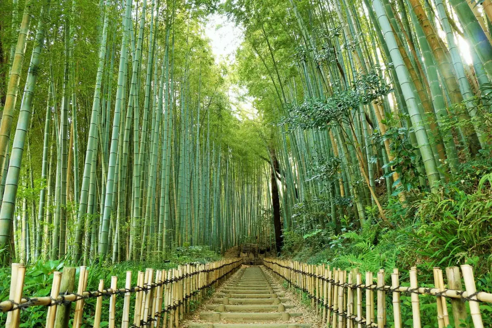
Stay
古民家一棟貸切旅館 成田さくら邸
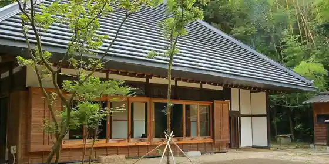
Ko Minka Hitomune Kashikiri Ryokan Narita Sakura Tei
Ryokan inn in Yoshimi, Sakura with one group per day and a renovated traditional house.
佐倉第一ホテル
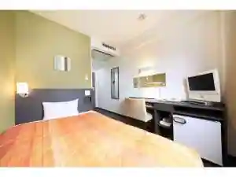
Sakura Daichi Hotel
Hotel in Osakidai, Sakura with parking; 2-minute walk from Jrsakura Station.
ウィシュトンホテル・ユーカリ
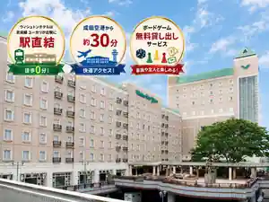
Uishuton Hotel Yukari
Hotel in Sakura with buffet meals and breakfast available.
Dining
プレゼンテ スギ
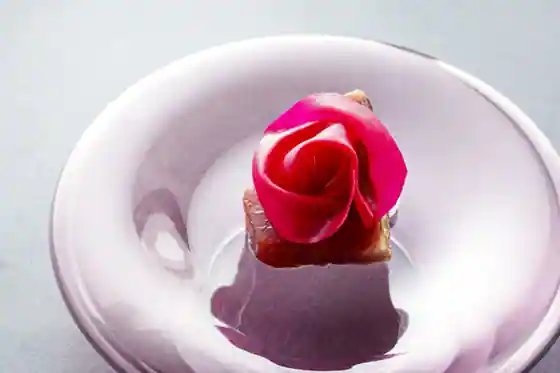
Purezente Sugi
玉家
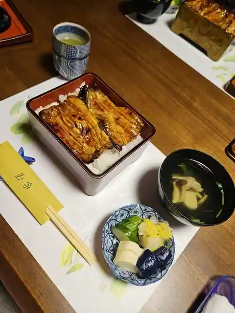
Tama Ie
イタリアンレストラン Zucca
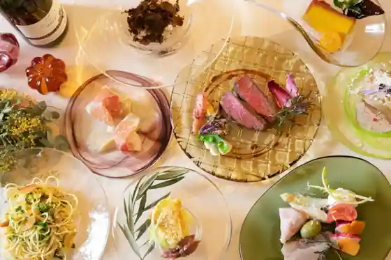
Itarian Restaurant Zucca
カステッロ
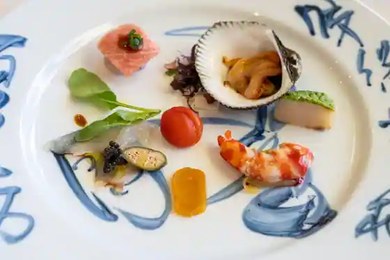
Kasuterro
喜多方食堂 麺や 玄 佐倉分店
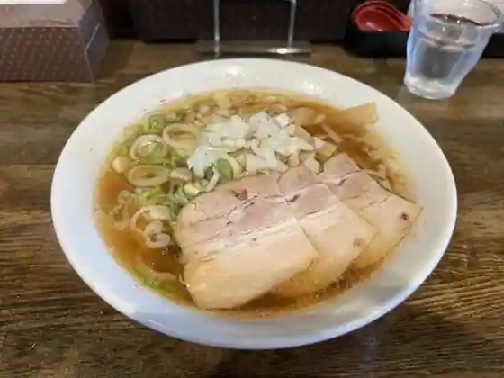
Kitakata Shokudo Men Ya Gen Sakura Fun
馳走 かく田
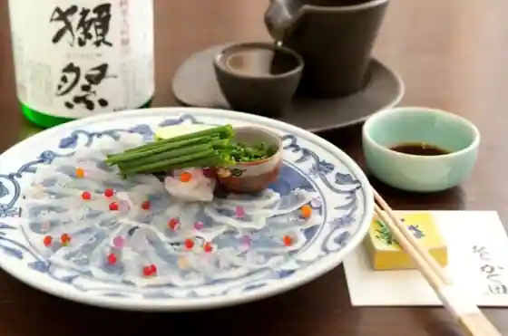
Chiso Kaku Ta
トラットリア・ラ・カパンナ
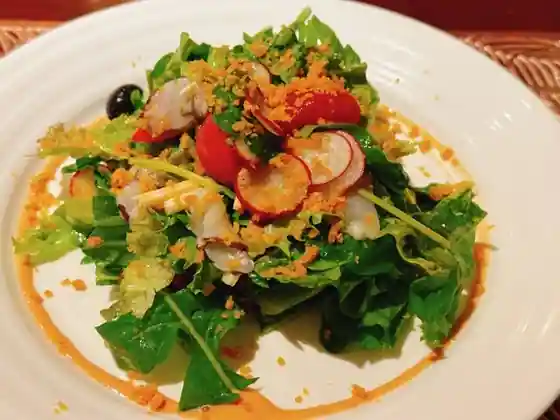
Trattoria Ra Ka Bakery Na
la falaise
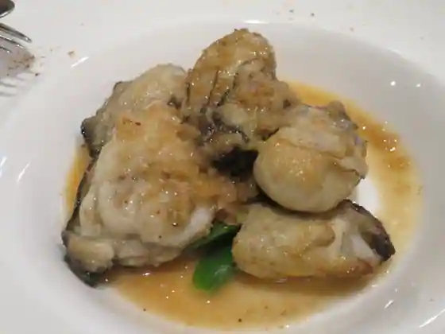
la falaise
おかやま食堂
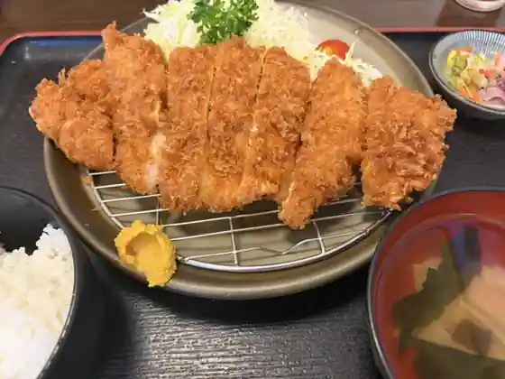
Okayama Shokudo
どてちんⅢ
Dotechin
幸
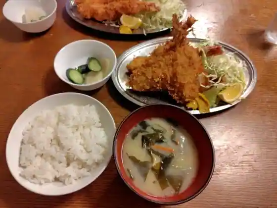
Sachi
金子牧場
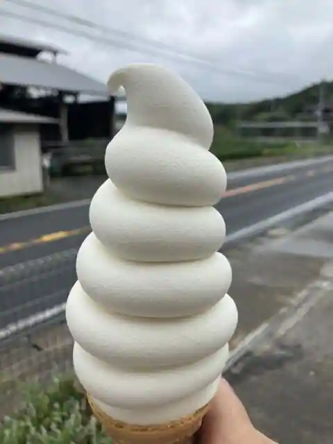
Kaneko Bokujo
シェ・ムラ
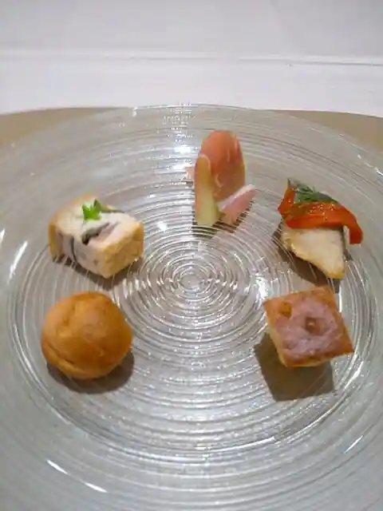
Shie Mura
魚介醤油ラーメン 和屋
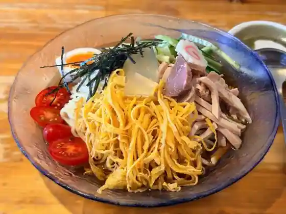
Gyokai Shoyu Ramen Wa Ya
武道家 心
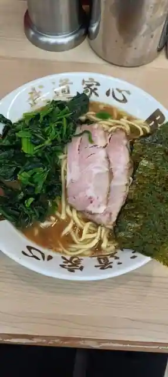
Budo Ie Kokoro
ららポーク
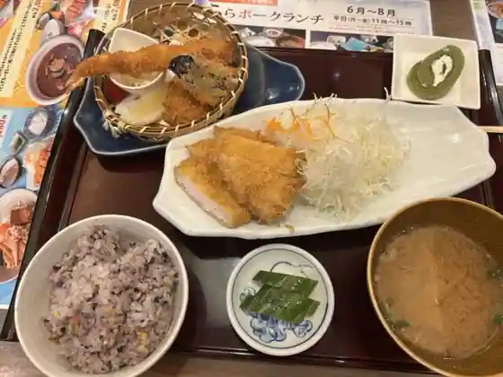
Rara Poku
タンメンしょうや
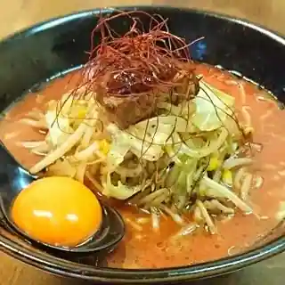
Tanmen Shoya
レストラン サダフ
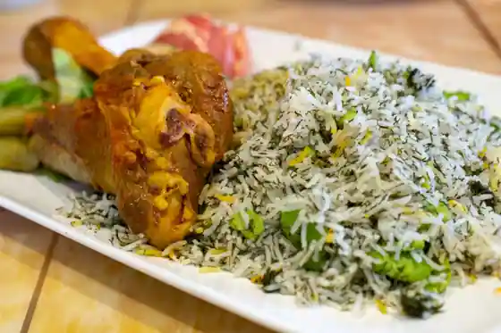
Restaurant Sadafu
KINGS
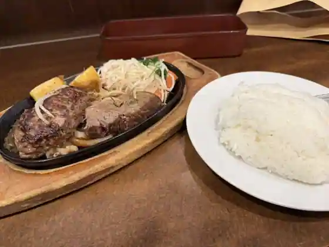
KINGS
福寿し 勝田台店
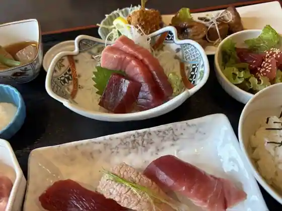
Fukuju Shi Katsuta Dai
サクラマナーハウス ティールーム
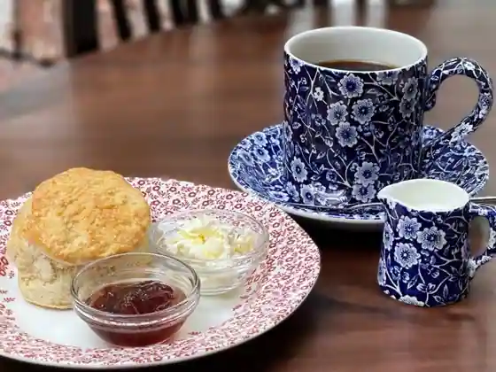
Sakuramana House Teirumu
麺屋 青山 臼井店
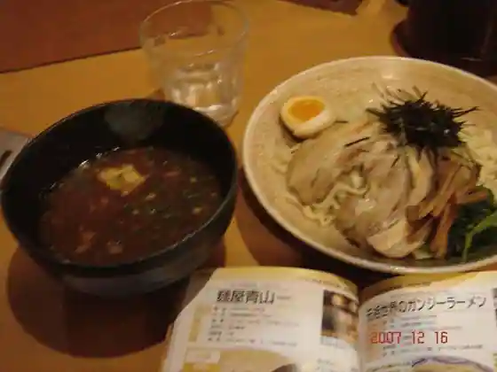
Men Ya Aoyama Usui
らー麺 つけ麺 おぐり
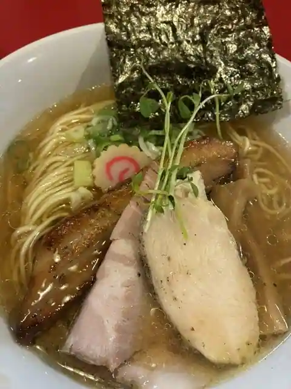
Ra Men Tsuke Men Oguri
里山トランジット
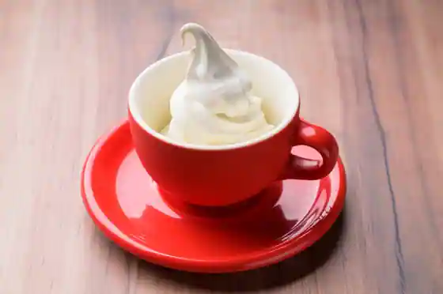
Satoyama Toranjitto
Sights
Hiyodori Saka
Sakura Kusa Bue no Oka
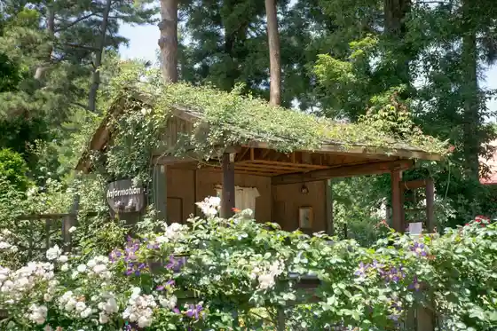
Sakura Buke Residence
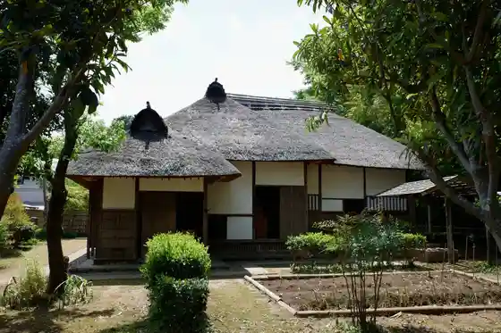
Asa Ga Ta Shrine
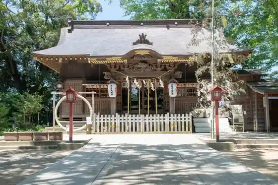
Sakura Ki no Ko Sono
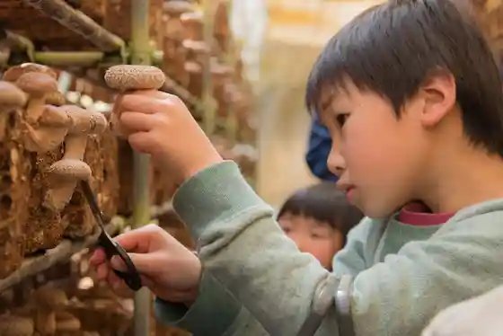
Sakura Castle Park
Yamaman Yukarigaoka Sen
Sakura Rabenda Land
Sakura Ritsu Art Museum
Kyu Hotta Tei (Sakura Garden)
Sakura Juntendo Memorial Museum
KK Yamaman Yukari Farm
Asotsu Kura
Tsukamoto Art Museum
Nosambutsu Chokubai Tokoro Kashi no Ki Minami Yukarigaoka Mise
Sakura Shin Town Ohayashi Kan
Yamaman Yukari Farm Nosambutsu Chokubai Tokoro Kashi no Ki Main Shop
JA Chiba Mirai Nosambutsu Chokubai Tokoro Yasai Hatake Sakura Mise
Marushiekashima